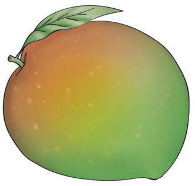
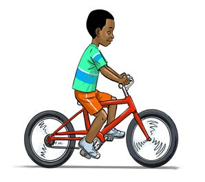

Ninatamka sauti ya herufi e/ Ninabainisha kwa kutumia tahajia za vidole herufi e.
Hii ni picha ya nini?

- 1. Tamka sauti ya mwanzo ya neno ulilotaja/ bainisha kwa kutumia tahajia za vidole herufi ya mwanzo ya neno hilo.
- 2. Taja maneno mengine yanayoanza na sauti hiyo/ bainisha kwa lugha ya alama maneno mengine yanayoanza na herufi hiyo.
Watoto hawa wanafanya nini?

- 1. Matendo yapi yana sauti/ herufi za mwanzo zinazofanana?
- 2. Tendo lipi lina sauti/ herufi ya mwanzo isiyofanana na nyingine?